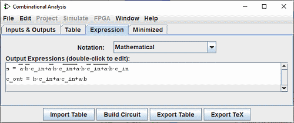
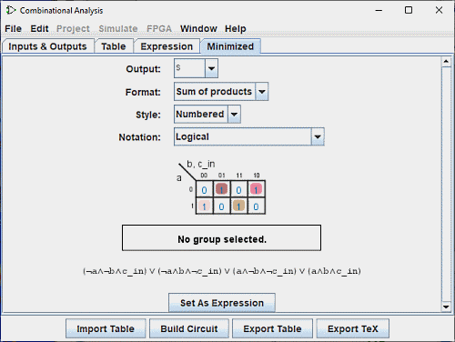

创建表达式
对于每个输出变量，组合分析窗口会维护两份信息：真值表中的对应列，以及描述该输出如何由输入决定的布尔表达式。可以编辑真值表，也可以编辑表达式；另一份信息会自动随之更新，以保持一致。
布尔表达式特别有用，因为生成与当前状态对应的电路时，组合分析窗口会使用这些表达式。
可以使用窗口的最后两个选项卡查看和编辑表达式，即表达式选项卡和最小化选项卡。
表达式选项卡

表达式选项卡用于查看和编辑每个输出变量当前关联的表达式。它包含一个“表示法”选择器，以及该电路的数学表达式列表。
表示法：选择器用于切换输出表达式的显示方式。可以从五种表示法中选择：
- 数学：
- 上方横线表示取反，乘号或并置表示与，+ 表示或。
- 逻辑：
- ¬ 表示取反，˄ 表示与运算，˅ 表示或运算。
- 替代逻辑：
- ~ 表示取反，˄ 表示与运算，˅ 表示或运算。
- 布尔编程：
- ! 表示取反，&& 表示与运算，|| 表示或运算。
- 位编程：
- ~ 表示取反，& 表示与运算，| 表示或运算。
选择器下方以列表形式显示表达式。双击表达式所在行，即可在文本面板中编辑该表达式。
请注意，编辑表达式会相应修改真值表；编辑真值表也会相应修改表达式，这些修改无法自动恢复。
下方的文本窗格以 ASCII 形式显示相同信息。此处，取反用波浪号（'~'）表示。
可以在文本窗格中编辑表达式，并单击Enter按钮使其生效；此操作也会更新真值表以保持一致。Clear按钮可清空文本窗格，Revert按钮可将窗格恢复为当前表达式。
请注意，若编辑真值表，已编辑的表达式将丢失。
除了用乘法和加法分别表示与和或之外，输入的表达式还可以包含 C/Java 逻辑运算符，也可以直接写 AND、OR、NOT 等单词。
| 最高优先级 | ~ ! ' | 取反 |
|---|---|---|
| （无）& && | 与 | |
| ^ | 异或 | |
| 最低优先级 | + | || | 或 |
以下示例均为同一表达式的有效表示形式。也可以混合使用运算符。
| a' (b + c) |
| !a && (b || c) |
| NOT a AND (b OR c) |
通常，连续 AND（或 OR、XOR）中的括号并不重要。（特别是在 Logisim 创建对应电路时，它会忽略这类括号。）
最小化选项卡

最后一个选项卡显示真值表某一列的最小化表达式。此面板包含四个选择器、卡诺图和最小化表达式。
使用顶部的输出：选择器，可以选择要查看哪一个输出变量的化简结果。
接下来的格式：选择器用于指定生成乘积项之和还是和项之积。
样式：选择器用于调整卡诺图边缘变量的显示方式，可以显示二进制编号，也可以用横线标出取值为真的区间。

|
| 编号 |

|
| 画线 |
表示法：选择器的作用与上文的表达式选择器相同。
选择器下方会出现与变量对应的卡诺图。可以单击卡诺图来更改相应的真值表值。卡诺图还会用实心半透明圆角矩形标出当前最小化表达式包含的项。
卡诺图下方显示最小化表达式本身，格式与表达式选项卡中的显示相同。Logisim 使用 Quine-McCluskey 算法计算最小化表达式。其效果等同于使用卡诺图化简，但适用于任意数量的输入变量。
设为表达式按钮可将最小化表达式设为该变量对应的表达式。通常不必这样做，因为编辑真值表后，Logisim 会自动为修改过的列使用最小化表达式；但如果曾通过表达式选项卡手动输入表达式，这个按钮可以方便地切换回相应的最小化表达式。
下一节： 生成电路。